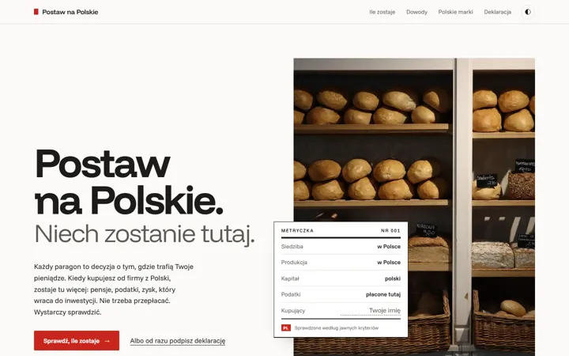
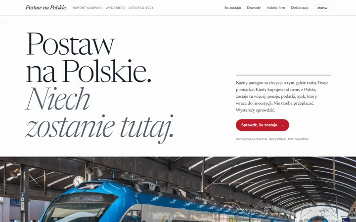
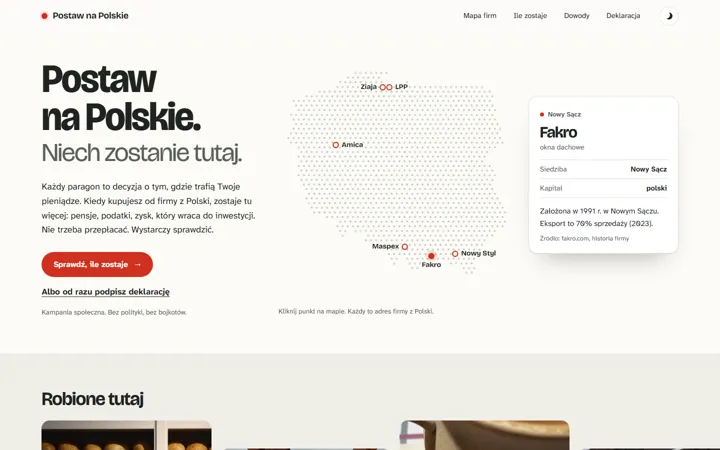

Postaw na Polskie: trzy kierunki v2
Ta sama treść, nowy język wizualny. Biel dominuje, tekst w ciemnym neutralu, czerwień tylko jako akcent (CTA, znak, detale): na zrzutach od 0,3% do 1,6% powierzchni, a w v1 było to 13–15% w jasnym i 85% w ciemnym motywie. Każdy prototyp ma jasny i ciemny motyw (przełącznik w nagłówku), działa przy 390 px i respektuje prefers-reduced-motion. Opis w _brief/KIERUNKI_V2.md.

v2-A „Metryczka” etykieta premium marki
- Big idea
- Polskie widać na metryczce, nie na fladze. Strona jak tył opakowania marki premium: czarny druk na bieli, czerwony tylko w znaczku „PL”.
- Paleta
- #FBFAF8 · #1D1C1A · #C8261D
- Fonty
- Funnel Display + Funnel Sans
- Signature
- „Kod jednej złotówki”: 100 kresek kodu kreskowego (100 groszy). Przełączasz producenta, a kreski przedrukowują się na 79 albo 25 gr.
Otwórz v2-A

v2-B „Raport” magazyn o polskiej przedsiębiorczości
- Big idea
- Kampania jako dobrze zrobiony raport gospodarczy: okładka, rozdziały, zdjęcia z polskich zakładów, a każda liczba ma przypis na marginesie.
- Paleta
- #FDFDFC · #17202A · #C01B2A
- Fonty
- Newsreader + Albert Sans
- Signature
- „Przypis na marginesie”: klikasz liczbę w tekście, a na marginesie podświetla się źródło (na telefonie rozwija się pod akapitem).
Otwórz v2-B

v2-C „Tu się robi” mapa adresów polskich firm
- Big idea
- „Polskie to adres” dosłownie: mapa z kropek, na której każdy punkt to siedziba firmy z katalogu. Ciepło, ludzie i miejsca.
- Paleta
- #FCFBF7 · #1F2421 · #D0301F
- Fonty
- Bricolage Grotesque + Atkinson Hyperlegible Next
- Signature
- „Mapa adresów”: klikasz punkt (albo firmę z listy), a obok pojawia się karta z metryczką i źródłem.
Otwórz v2-C
Rekomendacja art directora: v2-A „Metryczka”. Najkrócej odcina skojarzenie z plakatem, bo wygląda jak opakowanie dobrej marki, a nie jak hasło. Zachowuje to, co działało w v1 (metryczka, „Kupujący: Ty”), i jest najtańsza we wdrożeniu na obecną strukturę serwisu. Z v2-C warto pożyczyć mapę do podstrony katalogu, a z v2-B przypisy do podstrony „Dlaczego to działa”.